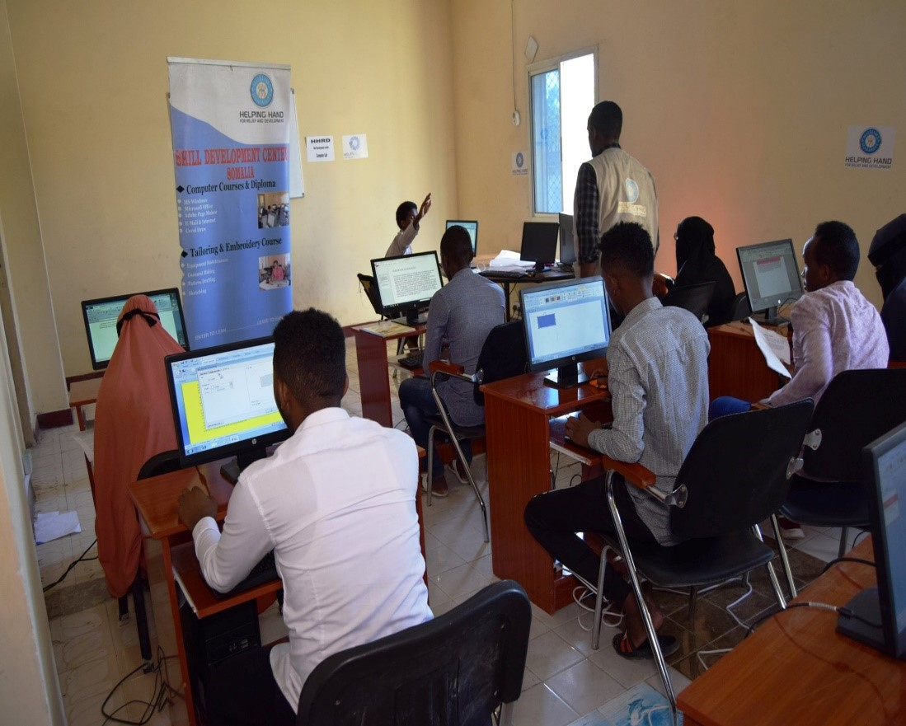
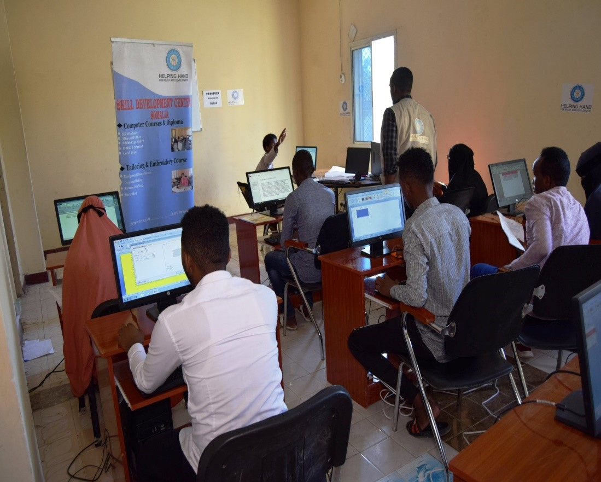

Welcome to Rugut’s Library and Learning Resource Center
The Rugut’s Library and Learning Resource Center is a Community-Based Organization that aims at providing reading resources and learning opportunities to Kericho community members and Kenyans at large. It serves Kindergarten, elementary, middle, high school, and post-secondary education.
Request for book reservation
Famous quotes to help you build a reading culture through the Library
- "When you are in doubt, go to the Library.
- "I had found my religion: nothing seemed more important to me than a book. I saw the library as a temple."
- "He loved libraries. Nowhere else in the world felt so safe and homey. Nowhere else smelled like books and dust and happy solitude quite like a library did."
- "Every time you enter a library you might say to yourself, 'The world is quiet here,' as a sort of pledge proclaiming reading to be the greater good."
- "Overall, the library held a hushed exultation, as though the cherished volumes were all singing soundlessly within their covers."
- "He sat there studiously bent over his work (Bill saw him), which lay in a slant of crisp white winterlight, his face sober and absorbed, knowing that to be a librarian was to come as close as any human being can to sitting in the peak-seat of eternity’s engine."
SERVICES OFFERED;
This are some of the services we offer;
- COLLECTION OF READING AND REFERENCE MATERIAL.Over 50,000 volumes in all subject for college and University students
- CONDUCIVE ENVIRONMENT FOR STUDIES.Nice and quiet reading environment with comfortable reading furniture
- COMPUTERS & INTERNET ACCESS CONSULTANCY

 

Preview of some books
There are numberous books we have at the resource centre.You can preview details of some of the books we have listed for you here.With it's description and preview, you can easy like and order or come and read other types that we didn't put here;
- TIME FOR TRUTH: Living Free in a World of Lies, Hype & Spin.In postmodern society, truth no longer exists in any objective or absolute sense. At best, truth is considered relative. At worst, it's a matter of human convention. But, as Os Guinness points out in this book, truth is a vital requirement for freedom and a good life.Time for Truth urges readers to seek the truth, speak the truth, and live the truth. Guinness shows that becoming free and truthful people is the deepest secret of integrity and the highest form of taking responsibility for ourselves and our lives. Now in paperback, this engaging book will interest Os Guinness fans, thoughtful readers, and those concerned with moral, political, and cultural issues.
- WAITING FOR BABY:Lilly Russo is thrilled--and terrified--to be pregnant. First it's a bit of a shock that her brief affair with the owner of Bear Creek Ranch, Jake Tucker, led to a new life growing inside her. But there are complications. She's worried about being a mom, but she's even more concerned about Jake, already a busy single father of three girls. And now he's proposing to turn their brief affair into a permanent arrangement.Running his ranch and raising three daughters is enough to keep Jake on his toes. But he's determined to do the right thing by Lilly. Can their relationship grow from a fling into love--considering there's a baby at stake?
- DARKEST EVENING OF THE YEAR:The Darkest Evening of the Year is a novel by the author Dean Koontz, released on November 27, 2007. The title is a possible allusion to Robert Frost's _"Stopping by Woods on a Snowy Evening"_. Koontz’s books always thrill, and this one is no different. What makes The Darkest Evening of the Year special is that it tugs so effectively at the heartstrings.
- ACCOUNTING FOR DUMMIES:, by Kenneth Boyd, Lita Epstein, Mark P. Holtzman, Frimette Kass-Shraibman, Maire Loughran, Vijay S. Sampath, John A. Tracy, Tage C. Tracy, Jill Gilbert Welytok.Listed 5 out of 17 times, the w:ell known For Dummies Series is a powerful one-stop accounting reference. It offers a basic understanding of accounting practices and is relevant for anyone who handles money. Knowing how to balance the books and stay in the black is vital for keeping a business afloat or keeping your checkbook balanced. If you need to keep your books in order, this new edition of Accounting For Dummies helps you get a handle on all those columns of numbers.
- ON THE WRONG SIDE-:My life in The KGB.As thrilling as any novel, this is the true story of one of the highest ranking KGB officials to defect to the United States. "A spy thriller that is even more dramatic because the events really happened".--Senator John G. Tower
Online Order
Meet the Team
The Library has embraced a team-based management philosophy as it suits our strong belief in shared leadership practices, innovation, personal leadership, strong communication, and collaboration. The Library Management Team guides the operation and management of the library and ensures that the library meets its strategic goals. To this end, this team develops policies and strategic plans, manages the budget and allocates resources. A team environment allows the Library to better leverage these strengths and support students and faculty in their academic pursuits.
Our team regularly hosts work-ins, meet and greets, and other events
We can connect you with people, resources, and more through our networks